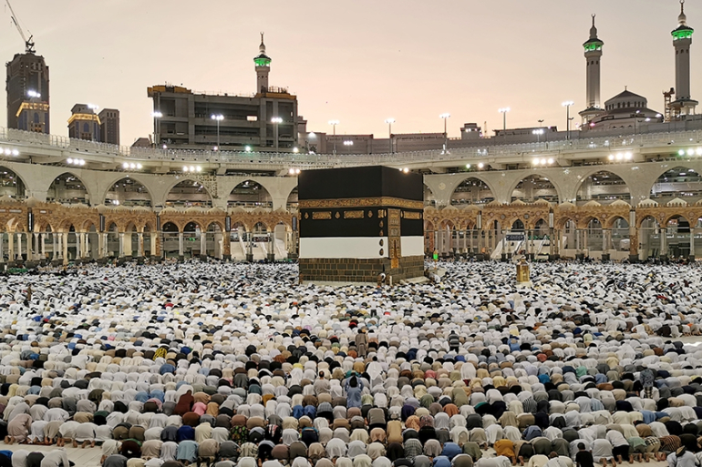
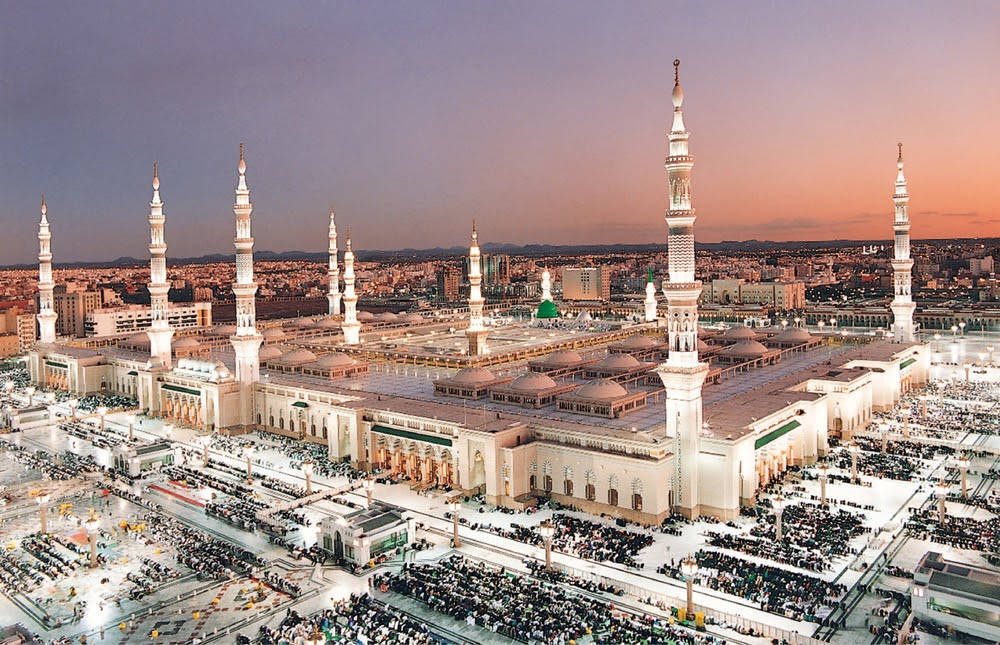

Holiest sites in Islam
Mecca, officially Makkah al-Mukarramah (Arabic: مكة المكرمة, romanized: Makkat al-Mukarramah, lit. 'Makkah the Noble' Hejazi pronunciation: [makːa almʊkarːama]) and commonly shortened to Makkah (Arabic: مكة, romanized: Makkah Hejazi pronunciation: [makːa]),[a] is a city and administrative center of the Mecca Province of Saudi Arabia, and the holiest city in Islam.[2] The city is 70 km (43 mi) inland from Jeddah on the Red Sea, in a narrow valley 277 m (909 ft) above sea level. Its last recorded population was 1,578,722 in 2015.[3] The estimated metro population in 2020 is 2.042 million, making it the third-most populated city in Saudi Arabia after Riyadh and Jeddah. Pilgrims more than triple this number every year during the Ḥajj pilgrimage, observed in the twelfth Hijri month of Dhūl-Ḥijjah.
Al-Masjid an-Nabawi (Arabic: المسجد النبوي, lit. 'The Prophetic Mosque'), known in English as The Prophet's Mosque, and also known as Al Haram, Al Haram Al Madani and Al Haram Al Nabawi by locals, is a mosque built by the Islamic prophet Muhammad in the city of Medina in the Al Madinah Province of Saudi Arabia. It was the second mosque built by Muhammad in Medina, after Masjid Quba'a, and is now one of the largest mosques in the world. It is the second holiest site in Islam, after the Masjid al-Haram in Mecca.[2] It is generally open regardless of date or time, and has only been closed to visitors once in modern times, as Ramadan approached during the 2020 COVID-19 pandemic.[3]

Al-Aqsa Mosque (Arabic: ٱلْمَسْجِد ٱلْأَقْصَىٰ, romanized: al-Masjid al-ʾAqṣā, IPA: [ʔælˈmæsdʒɪd ælˈʔɑqsˤɑ] (About this soundlisten), "the Farthest Mosque"), located in the Old City of Jerusalem, is the third holiest site in Islam. The mosque was built on top of the Temple Mount, known as the Al Aqsa Compound or Haram esh-Sharif in Islam, several decades after Muhammad's death. Modern Muslims believe that Muhammad was transported from the Great Mosque of Mecca to this location during the Night Journey. Islamic tradition holds that Muhammad led prayers towards this site until the 16th or 17th month after his migration from Mecca to Medina, when Allah directed him to instead turn towards the Kaaba in Mecca.[2]